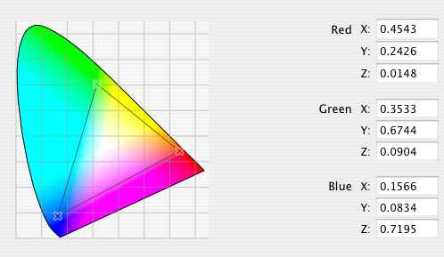

|
Q: I'm confused about the role of the "Apple RGB" and "Generic RGB" profiles when working with untagged data on Mac OS X. Please explain.A: The Apple RGB profile was originally created by Adobe (not Apple) for use with Adobe Photoshop and Illustrator. It is based on the classic Apple 13" RGB monitor with a gamma of 1.8 and 6500 white point. Here’s a brief history: In the "early days" of image editing and color management, it was commonly assumed that image editing occurred in the same color space as the display device. ColorSync, for example, assumed the untagged color space to be the current display profile (the "System profile"). And because CRTs were the dominant technology at the time, most everyone's default profile was set to an appropriate Apple 13" RGB display profile. Therefore, Adobe created the Apple RGB profile based on the classic Apple 13" RGB monitor, and used it as the default RGB space in PhotoShop and Illustrator. Here's a diagram (taken from ColorSync Utility) of the Apple RGB profile showing the red, green and blue tristimulus values: Figure 1: Apple RGB Profile red, green and blue tristimulus values. Given the popularity of image editing with Photoshop and Illustrator, the commonplace assumption was that all untagged RGB images created by the Macintosh platform were tagged with Apple RGB. This assumption is not universally correct for Mac OS X. Mac OS X is fully color managed and takes a different approach to handling untagged image data. Mac OS X ships with a set of generic profiles (Generic RGB, CMYK, Gray, Lab, XYZ) that it automatically assumes are the source profiles for untagged image data. The Generic RGB profile that ships with Mac OS X is based on P22 phosphors, D65 white point and 1.8 gamma. Here's a diagram (again taken from ColorSync Utility) of the Generic RGB profile showing the red, green and blue tristimulus values: Figure 2: Generic RGB Profile red, green and blue tristimulus values.  When creating software or hardware solutions for Mac OS X, you should assume Generic RGB for a default RGB space. One notable exception is display devices that should always follow the VESA specification and include accurate chromaticity information for the display in their EDID data. IMPORTANT: Mac OS X will assume a Generic RGB color space for legacy untagged images that may have been created with an assumed Apple RGB color space. Developers who still wish to use Apple RGB should license it from Adobe and tag their images with it. It is also possible to create color spaces based on the Apple RGB profile (or any other profile for that matter) for use with the Quartz 2D functions on Mac OS X. See See Technical Q&A QA1396, 'Creating color spaces that ensure color matching.' for more information. ReferencesDocument Revision History
Posted: 2005-10-17 |
|